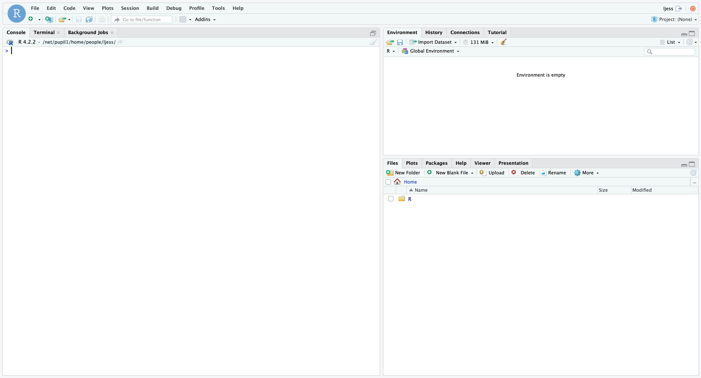

2+2
1:100
3*3
sample(1:9)
X <- matrix(sample(1:9), nrow = 3, ncol = 3)
X
sum(X)
mean(X)
?sum
sum
nucleotides <- c("a", "c", "g", "t")
nucleotides
sample(nucleotides, size = 100, replace = TRUE)
table(sample(nucleotides, size = 100, replace = TRUE))
paste0(sample(nucleotides, size = 100, replace = TRUE), collapse = "")
replicate(n = 10, expr = paste0(sample(nucleotides, size = 100, replace = TRUE), collapse = ""))
df <- data.frame(id = paste0("seq", 1:10), seq = replicate(n = 10, expr = paste0(sample(nucleotides, size = 100, replace = TRUE), collapse = "")))
df
str(df)
ls()Lab 1: Course Intro & the Very Basics
Package(s)
Schedule
- 08.00 - 08.15: Arrival, pre-course anonymous questionaire and interest based group formation
- 08.15 - 08.45: Lecture: Course Introduction
- 08.45 - 09.00: Break
- 09.00 - 11.15: Exercises
- 11.15 - 11.30: Break
- 11.30 - 12.00: Lecture: Reproducibility in Modern Bio Data Science
Learning Materials
Please prepare the following materials:
- Read the full course description here: 22100 / 22160
- Answer the brief anonymous R for Bio Data Science Pre-course Questionnaire (See schedule above)
- Read course site sections: Welcome to R for Bio Data Science, Prologue and lastly Getting Started, where it is important that you perform any small tasks mentioned
- Book: R4DS2e: Welcome
- Book: R4DS2e: Preface to the second edition
- Book: R4DS2e: Introduction
- Book: R4DS2e: Chapter 2 Workflow: basics
- Book: R4DS2e: Chapter 28 Quarto (Don’t do the exercises)
- Video: RStudio for the Total Beginner
- Paper: A Quick Guide to Organizing Computational Biology Projects
Learning Objectives
A student who has met the objectives of the session will be able to:
- Master the very basics of R
- Navigate the RStudio IDE
- Create, edit and run a basic Quarto document
- Explain why reproducible data analysis is important, as well as identify relevant challenges and explain replicability versus reproducibility
- Describe the components of a reproducible data analysis
Exercises
Today, we will focus on getting you started and up and running with the first elements of the course, namely the RStudio IDE (Integrated Developer Environment) and Quarto. If the relationship between R and RStudio is unclear, think of it this way: Consider a car, in that case, R would be the engine and RStudio would be the rest of the car. Neither is particularly useful, but together they form a functioning unit. Before you continue, make sure you in fact did watch the “RStudio for the Total Beginner” video (See the Learning Materials for today’s session).
Cloud server and the RStudio IDE
Go to the R for Bio Data Science Cloud Server and follow the login procedure. Upon login, you will see this:

This is the RStudio IDE. It allows you to consolidate all features needed to develop R code for analysis. Now, click Tools \(\rightarrow\) Global Options... \(\rightarrow\) Pane Layout and you will see this:

This outlines the four panes you have in your RStudio IDE and allow you rearrange them as you please. Now, re-arrange them, so that they look like this:

Click Apply \(\rightarrow\) OK and you should see this:

First steps
The Console
Now, in the console, as you saw in the video, you can type commands like:
Take some time and play around with these commands and other things you can come up with. Use the ?function to get help on what that function does. Be sure to discuss what you observe in the console. Do not worry too much about the details for now; we are just getting started. But as you hopefully can see, R is very flexible and basically the message is: “If you can think it, you can build it in R”.
- Go to R4DS2e Chapter 2 Workflow: basics in R4DS2e and do the exercises
The Terminal
Notice how in the console pane, you also get a Terminal, click and enter:
ls
mkdir tmp
touch tmp/test.txt
ls tmp
rm tmp/test.txt
rmdir tmp
ls
echo $SHELLBasically, here you have access to a full terminal, which can prove immensely useful! Note, you may or may not be familiar with the concept of a terminal. Simply think of it as a way to interact with the computer using text command, rather than clicking on icons etc. Click back to the console.
The Source
The source is where you will write scripts. A script is a series of commands to be executed sequentially, i.e. first line 1, then line 2 and so on. Right now, you should have a open script called Untitled1. If not, you can create a new script by clicking white paper with a round green plus sign in the upper left corner.
Taking inspiration from the examples above, try to write a series of commands and include a print()-statement at the very end. Click File \(\rightarrow\) Save and save the file as e.g. my_first_script.R. Now, go to the console and type in the command source("my_first_script.R"). Congratulations! You have now written your very first reproducible R program!
The Whole Shebang
Enough playing around, let us embark on our modern Bio Data Science in R journey.
- In the
Filespane, clickNew Folderand create a folder calledprojects - In the upper right corner, click where it says
Project: (None)and then clickNew Project... - Click
New Directoryand thenNew Project - In the
Directory name:, enter e.g.r_for_bio_data_science - Click the
Browse...button and select your newly createdprojectsdirectory and then clickChoose - Click
Create Projectand wait a bit for it to get created
On Working in Projects
Projects allow you to create fully transferable bio data science projects, meaning that the root of the project will be where the .Rproj file is located. You can confirm this by entering getwd() in the console. This means that under no circumstances should you ever not work within a project, nor should you ever use absolute paths. Every single path you state in your project must be relative to the project root.
But why? Imagine you have created a project, where you have indeed used absolute paths. Now you want to share that project with a colleague. Said colleague gets your project and tests the reproducibility by running the project end-to-end. But it completely fails because you have hardcoded your paths to be absolute, meaning that all file and project resource locations point to locations on your laptop.
Projects are a must and allow you to create reproducible encapsulated bio data science projects. Note, the concept of reproducibility is absolutely central to this course and must be considered in all aspects of the life cycle of a project!
Quarto
While .R-scripts are a perfectly valid way to write scripts, there is another Skywalker:
- In the upper left corner, again, click the white paper with the round green plus, but this time select
Quarto Document - Enter a
Title:, e.g. “Lab 1 Exercises” and enter your name below in the boxAuthor: - Click
Create - Important: Save your Quarto document! Click
File\(\rightarrow\)Saveand name it e.g.lab_01_exercises.qmd - Minimise the
Environmentpane
You should now see something like this:

Try clicking the Render button just above the quarto-document. This will create the HTML5 output file. Note! You may get a Connection Refused message. If so, don’t worry, just close the page to return to the cloud server and find the generated .html file, left-click and select View in Web Browser.
If you have previously worked with Rmarkdown, then many features of Quarto will be familiar. Think of Quarto as a complete rethinking of Rmarkdown, i.e. based on all the experience gained, what would the optimal way of constructing an open-source scientific and technical publishing system?
If you have previously encountered Jupyter notebooks, Quarto is similar. The basic idea is to have one document covering the entire project cycle.
Proceed to R4DS2e Chapter 28 Quarto and do the exercises.
Bio Data Science with a Virtual AI Assistant
I am pretty sure you all know of ChatGPT by now, so let us address the elephant in the room!
Getting started
- Go to the ChatGPT site
- Create a user and log in
Let us get acquainted
Now, at the bottom it says “Send a message”, let us ask 3 simple question and see if we can find out what is what. Type the following questions in the prompt and read the answers:
- Explain in simple terms what you are
- Explain in simple terms how you work
- Explain in simple terms how you can be used to generate value as a virtual AI assistant, when doing Bio Data Science for R
- What is chatGPT and abbreviation for?
Moving onto R
In the upper left corner, click ChatGPT it to start a new session.
Again, type the following questions in the prompt and read the answers:
- R
- What is R?
- Give a few simple examples
- Explain the difference between base R and Tidyverse R
If you get some code examples, try copying and pasting them into the console in RStudio to see if they run.
Prompt Engineering
Start a new chat and enter:
- Give a few simple examples
Compare the response with the one from before, is it the same or different and why so?
Discuss in your group what is “Prompt Engineering” and how does it relate to the above few tests you did? (Bonus info: Prompt engineer is already a job and people are making money off of selling “prompts”)
…a bit more
Start a new chat and enter:
- Tell me about DNA
Check if it gives you correct information?
Now, write:
- Give a few fun examples on how to get started with the R programming language using DNA
- Copy/paste the code into the Console, do the examples all run?
- Discuss in your group if you understand what is going on
- Earlier you were told to play around with some code snippets. Perhaps you didn’t fully catch what was going on? If so, try to type in e.g.:
I'm new to R, please explain in simple terms, what the following code does:
"
nucleotides <- c("a", "c", "g", "t")
replicate(n = 10, expr = paste0(sample(nucleotides, size = 100, replace = TRUE), collapse = ""))
"- Now, you could also ask a question like this:
I am a student in the course "R for Bio Data Science" and we have been asked to solve the following problem:
"
Now it is time to take it a step further. A) Create a function, which returns random RNA of length 'l' and B) another function, which performs reverse transcription.
"
Please give me the solution to the problem- Try to run the code, you were presumable given. Likely, the tasks have been solved, but did you actually learn something? Do you understand the details of the code?
Strawberry Fields Forever
Start yet a new chat and run:
- How many Rs are there in the word strawberry?
- How many Rs are there in the word strawberries?
- What is the difference between strawberry and strawberries?
- Try as above, but using ‘raspberry’ and ‘cranberry’
- Inspect the answers, did ChatGPT get these simple questions right?
Summary
The following is IMPORTANT, so please read carefully and please discuss in your group
While ChatGPT can be a powerful tool for code productivity, it comes with a major caveat: When it fails, it fails with confidence (See Strawberry Fields Forever above). This means that it will be equally confident whether it is right or wrong! The optimal yield is when you are working on a problem with a tool, where you already have a good knowledge of the problem and the tool. Here, you can use your experience to evaluate if you are heading in the right direction or if you’re being send on a wild goose chase. In this situation, ChatGPT can be a powerful sparring partner to augment your bio data science workflow to enhance productivity.
Know the difference between “asking for a solution” and “asking for an explanation” - Do not cheat yourself here, it is very important that the yield of this course is that you learn Tidyverse R and not how to “use ChatGPT to produced code”.
Therefore, do not use ChatGPT to solve the exercises, rather use ChatGPT as a learning assistant. Here is an example of the difference:
- Wrong: Give me the tidyverse code for adding a new variable
zto a dataset, which is the sum ofxandy - Right: In simple terms, explain which tidyverse function is used to add variables to datasets and give a very basic example of how it is used
The wrong way will give you the solution directly, robbing you of the learning process of internalising the functionality and the translation of the general explanation to the specific application to your problem. The right way, will allow you to work with your understanding of the problem and how to translate the general explation into a specific solution to your problem.